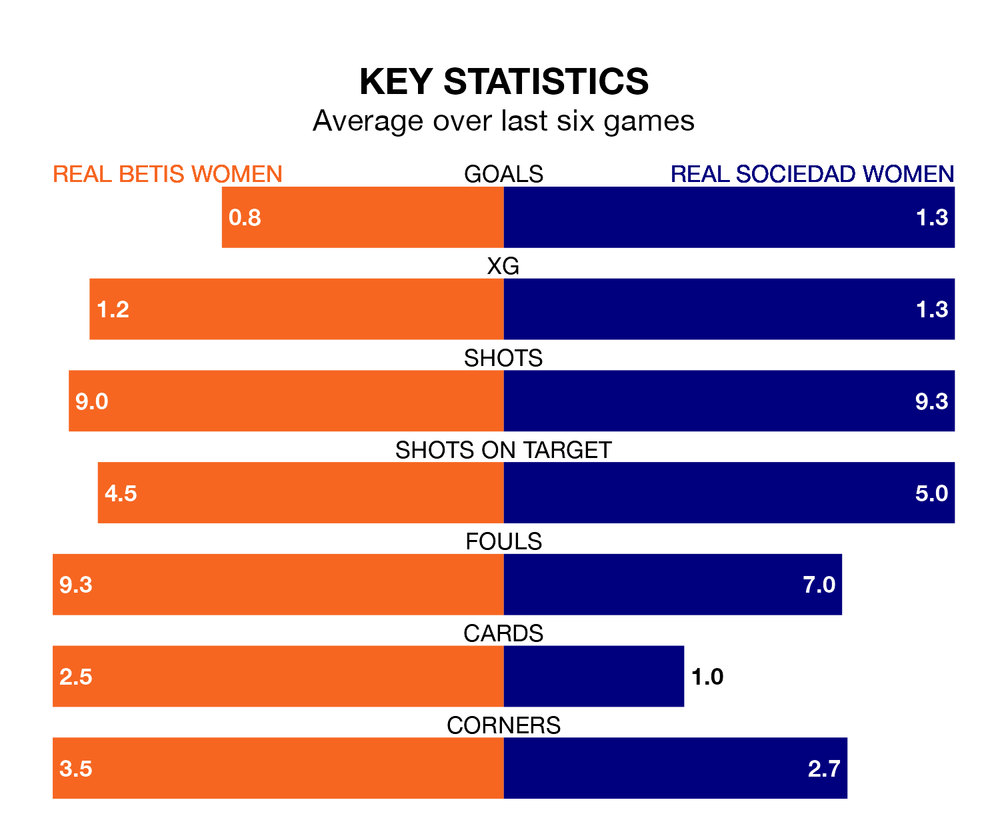

Real Sociedad Women are strong favourites to take all three points despite Real Betis Women's home advantage in Sunday's match at Ciudad Deportiva Luis de Sol.
*Betting Company* are offering odds of 1.73 on Sociedad Women sealing the win, with the visitors sitting eighth in Liga F table.
Betis Women, who are 15th in the league and 13 points behind Sociedad Women, are priced at 3.87 to win. A draw is set at 3.67.
Betis Women are in terrible form in Liga F, with no wins and a draw from their last six games.
With two wins and three draws over that period, Sociedad Women's form is much better – they have taken nine points from 18, compared to the hosts' one.
In the last 10 years, Betis Women and Sociedad Women have played each other on 15 occasions. Betis Women won four of them, Sociedad Women six, and they drew five times.
On average, Betis Women scored 1.1 goals and Sociedad Women 1.6 in those matches.
Their last meeting was on October 1, when Sociedad Women won 2-1 at home.
With 19 goals in 19 games so far this season, Betis Women are scoring at below the league average rate with 1.0 goals per game. And they are conceding more than average, letting in 47 goals at a rate of 2.5 per game.
The away team are also below average scorers, with 1.4 goals per game, compared to a league average of 1.6. They have conceded 1.8 goals per game.
In Synne Jensen, Sociedad Women have one of the league's sharpest shooters so far this season. She has notched 11 goals in 18 appearances, to sit fifth in the scoring charts.
Betis Women's top scorers, with three goals each, are Julia Aguado and Tiffany Cameron.
Betis Women's last match was on March 10, a 2-2 draw against Valencia Women, with Natalia Montilla Martínez and Violeta García Quiles getting the goals for Betis Women.
Sociedad Women lost 7-1 against Barcelona Women last time out, also on March 10, with Amaiur Sarriegi on the scoresheet.
Updated: 15:10 (UTC), 15/03/24